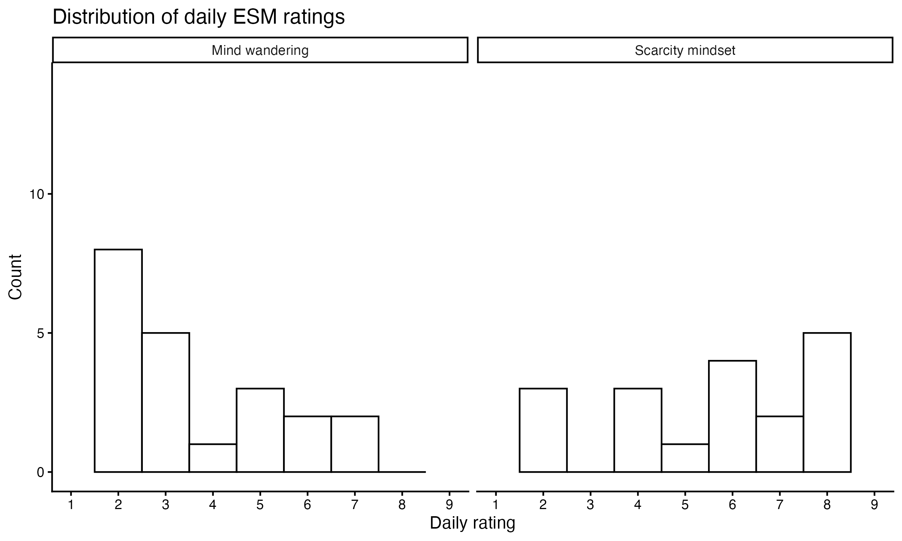
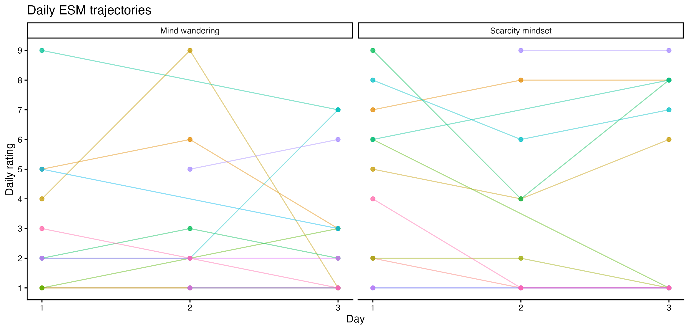
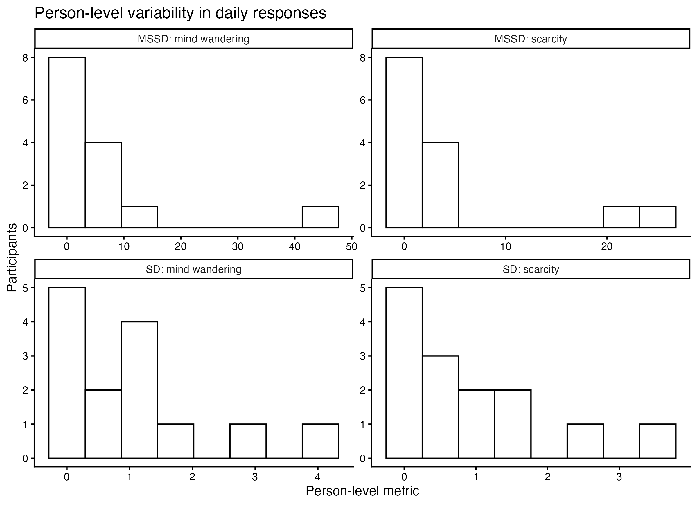
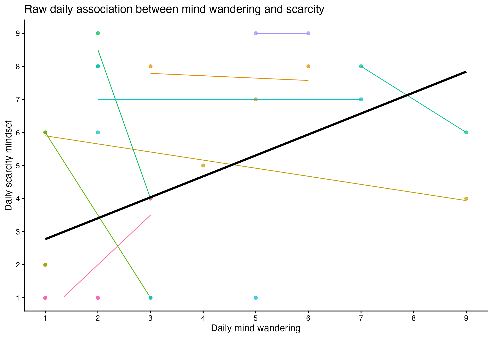
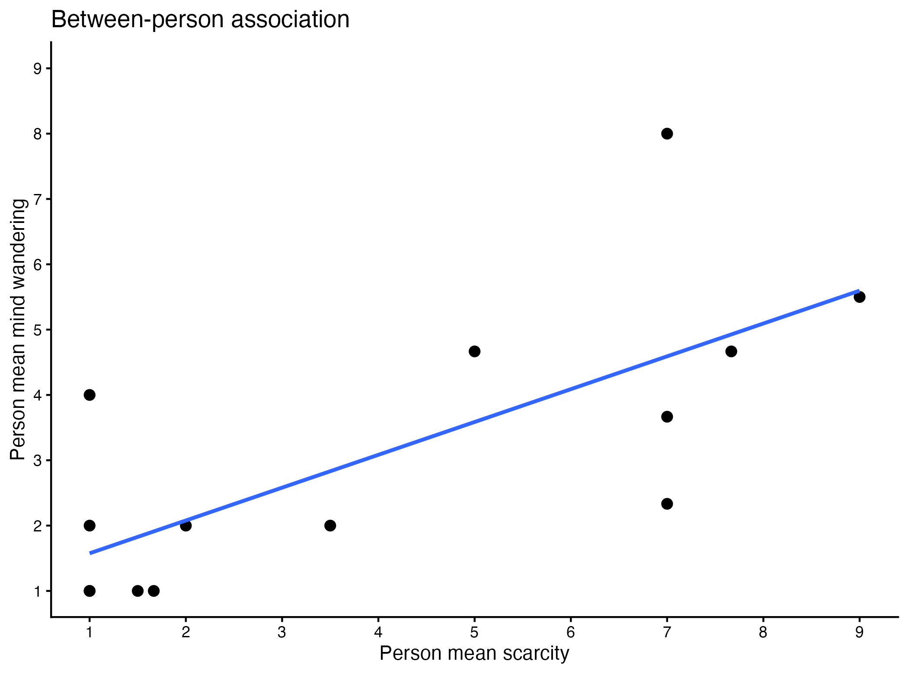
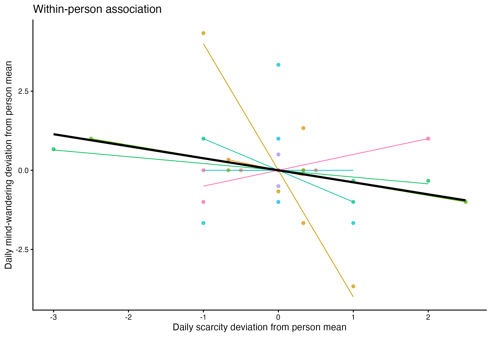
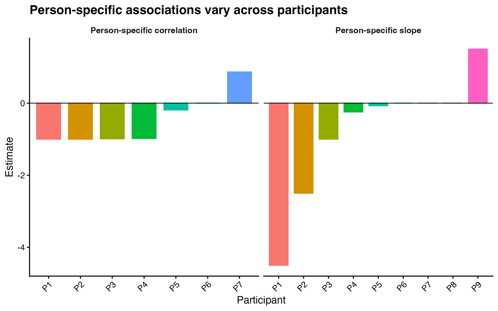

The purpose of this pilot
This project is best understood as a methodological toolbox rather than a hypothesis-driven findings report. The pilot included a small sample of participants who completed repeated daily reports of mind wandering and scarcity mindset. Because the sample was small, the goal is not to make strong population-level claims. Instead, the project shows how experience sampling data can be prepared, summarized, visualized, and modeled.
The core methodological question is: what can repeated daily data show us that a single cross-sectional survey cannot? The figures below demonstrate several answers: daily trajectories, individual variability, raw associations, within-person associations, between-person associations, and heterogeneity in person-specific patterns.
Executive summary
Small pilot sample
The dataset included 14 participants, 3 study days, and 35 person-day observations. Half of participants contributed 2 daily observations and half contributed 3.
Mind wandering was variable
Daily mind wandering averaged about 3 on a 1–9 scale across the three days, but individual trajectories showed meaningful variation across people and days.
Scarcity differed more between people
Scarcity mindset had a high intraclass correlation, ICC = .81, meaning most of the variation in this pilot was between people rather than within people across days.
Within- and between-person patterns differed
In the multilevel model, between-person scarcity predicted higher mind wandering, b = 0.49, p = .004, while daily within-person scarcity deviations were not clearly associated with mind wandering, b = -0.38, p = .174.
What the data look like
Experience sampling data have a nested structure: days are nested within people. The first step is to visualize both the shape of the responses and how each person moves over time. These plots are descriptive checks, but they are also useful for communicating what repeated-measures data make visible.

Distribution of daily responses. This plot shows the spread of daily mind wandering and scarcity mindset ratings across all person-days. It helps diagnose whether responses cluster at the low end, high end, or span the full scale. In this pilot, mind wandering tended to be low-to-moderate on average, while scarcity mindset showed a wide range of responses.

Daily trajectories. Each line represents one participant over time. This “spaghetti plot” shows the repeated-measures structure directly: some participants were fairly stable across days, while others shifted more noticeably. This is one of the clearest ways to show why ESM data are different from one-time survey data: the unit of analysis is not only the person, but also the person-day.
What repeated measures add
A cross-sectional survey can estimate average levels of mind wandering or scarcity mindset. An ESM design can also estimate how much each person fluctuates. That matters because two people can have the same average level but very different day-to-day patterns.

Within-person variability. This figure summarizes how much each participant’s daily responses varied across the pilot. The technical appendix calculated several person-level features, including means, standard deviations, entropy, mean square of successive differences, and probability of acute change. For the portfolio, the key point is methodological: ESM data can describe not only what people typically report, but how stable or variable their experiences are.
Separating raw, between-person, and within-person associations
One of the most important lessons from repeated-measures data is that the same two variables can have different relationships depending on the level of analysis. A raw daily association combines two sources of variation: people who are generally higher or lower than others, and days when the same person is higher or lower than usual.

Raw daily association. This plot shows the overall relationship between daily mind wandering and daily scarcity mindset before separating within-person and between-person variation. It is a useful starting point, but it can be misleading if interpreted alone because it mixes stable individual differences with day-to-day changes.

Between-person association. This plot asks whether participants who were generally higher in scarcity mindset also tended to be generally higher in mind wandering. In the pilot model, between-person scarcity was positively associated with mind wandering, b = 0.49, p = .004. Because the sample is small, the estimate should be treated as descriptive, but it demonstrates how ESM data can separate stable person-level differences from daily fluctuations.

Within-person association. This person-centered plot asks a different question: on days when a participant reported more scarcity than their own average, did they also report more mind wandering than their own average? In this pilot, the within-person association was not clear, b = -0.38, p = .174. The value of the plot is that it shows how the question changes once each person is compared to themselves rather than to other people.
Individual differences in associations
ESM data can also be used to explore whether the relationship between two daily experiences looks similar across people. With this pilot, person-specific estimates are necessarily unstable because each participant contributed only two or three daily observations. Still, the visualization shows the kind of individual-difference question that larger ESM studies can answer more confidently.

Person-specific associations. Each bar represents one participant’s estimated association between mind wandering and scarcity mindset. Most person-specific estimates in this small pilot were negative or near zero, with one positive pattern. Because each estimate is based on very few observations, this figure should be read as a demonstration of what can be extracted from ESM data rather than as evidence of reliable person-level differences.
What this project demonstrates
Repeated-measures data structure
The workflow starts with one row per participant-day and builds from basic completion checks to person-level summaries and multilevel models.
Visualization-first analysis
The most useful outputs are visual: distributions, trajectories, variability summaries, and within-person versus between-person association plots.
Within-person decomposition
The analysis separates whether people who are generally higher in scarcity also report more mind wandering from whether a person’s higher-than-usual scarcity days are also higher-mind-wandering days.
Appropriate inference
Because this was a small pilot, the page emphasizes workflow, visualization, and methodological capability rather than overclaiming substantive effects.
Technical appendix
The full technical appendix includes data import, completion checks, descriptive tables, person-level variability metrics, within-person association summaries, intraclass correlations, and a multilevel model decomposing scarcity mindset into within-person and between-person components.